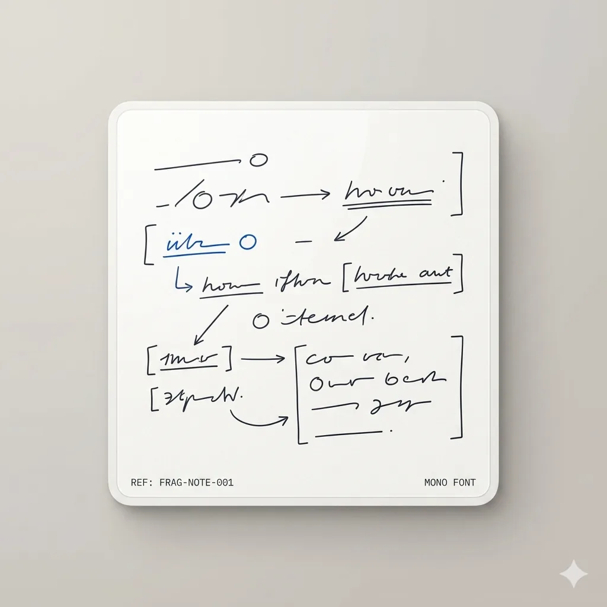
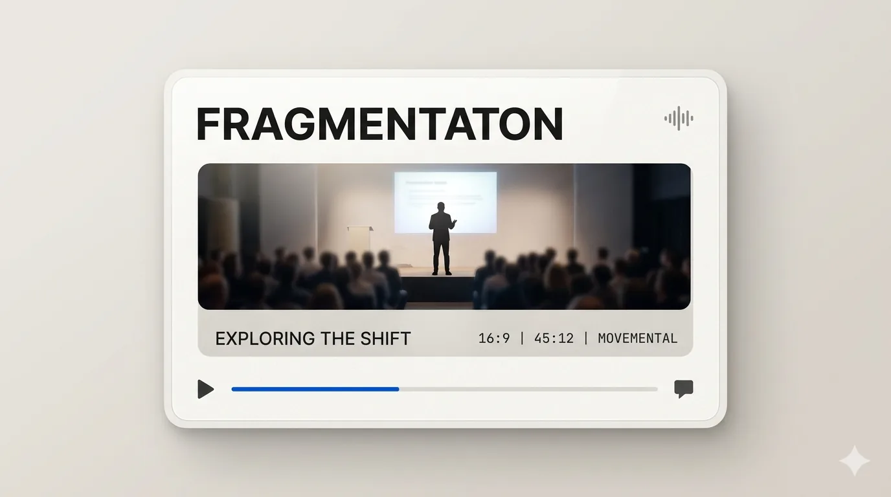

P
Fragmentation — full story (all audiences) — Movemental (mockup)
The problem, visually
All of this belongs together. None of it is connected.
Your intelligence—teaching, thinking, conversation, correspondence—exists as a
widening spread of artifacts. Each one is real. Each one is partial. None of them
knows the others exist. Use the dock below to read the same arc in the shape of your
organization and field.
View
Act I · Unity
One surface. One sequence.
At the start, everything you make sits in a single, readable shape. One bulletin.
One schedule. One room. A person can hold it in their hands and know what comes
next.
This is what coherence looks like. Nothing is louder than anything
else. Nothing is missing.
Act I · Unity
Designed to be whole.
A session card. A teaching plan. A single artifact that carries the whole idea and
the order it moves in. It is the complete unit of meaning—before
anything is copied, forwarded, or restated.
Act II · First break
The same thing—twice.
Then something subtle happens. The work gets copied. A diagram appears in two
places, with two versions. Neither is wrong. Neither is canonical.
This is the first quiet tear. Duplication without a center.
Act III · Divergence
A book. A module. A cover. A PDF.
One body of thought becomes many surfaces. The book says one thing. The course says
it differently. The cover promises a third angle. Each is well made. None of them
knows about the others.
What started as one idea now travels as
four disconnected artifacts.
Act IV · Channels multiply
Now it lives, in real time, in parallel.
Podcasts get recorded. Chat threads answer the same question three different ways.
The idea is no longer an object—it is a stream, running through channels that were
never designed to stay in sync.
Everything is findable. Nothing is unified.
Act V · Misalignment
The thread loses the plot.
At the end of the line: an email chain with seven names on it, a staggered reply, a
quote pulled from a draft nobody shipped. The signal is still there—just
distributed across people who aren't talking to each other.
This is the state most work lives in. Not broken. Just
ambient, fragmented, and quietly expensive.


What it's costing you
You built all of this. None of it can find itself.
Every channel is a search.
Every copy is a drift.
Every thread is a meeting that didn't happen—and the people who
need the answer aren't in the room.
The answer
One intelligence. Many expressions.
Every artifact, connected to one source of truth. The scatter stops being a tax and
starts being a surface.
Part II · The system
We don't generate a new scene for each stage.
We re-compose the same intelligence.
Every artifact you've just seen is reusable. What changes from here is how they're
arranged, what connects them, what interface wraps around them, and how they move and
replicate. Four stages. One library.
Stage 02 · Integration
Connection replaces scatter.
The same artifacts—now clustered, related, aware of each other. The book knows about
the course. The thread knows about the deck. One source of truth, many
expressions.
One source, many surfaces
Update the book; the course, the deck, and the thread update with it.
Relationships, not folders
Every artifact knows what it belongs to. Context travels with the content.
Loss of drift
Fewer copies. Fewer versions. Fewer disagreements about what's current.
What it looks like underneath
Every artifact becomes typed content.
The book, the module, the podcast, the thread—each gets a markdown body plus a
JSON schema of who it relates to, what it's about, and where it lives. That's the
information architecture powering everything that follows.
---title:"Fragments of Form"type:bookslug:"fragments-of-form"author:"Alan Hirsch"published:2024-09-12tags:[formation,architecture,movement]audiences:[movement-leader,church]connections:-module:"formal-systems"-podcast:"ep-12-rhythms"-thread:"bi-vocational-07mar"---Fragments of FormThe cost of coherence loss in a distributed body of work isn'tfriction. It's drift — the slow, invisible migration of meaningaway from its source until no version of the workagrees with any other.
Stage 03 · Activation
The intelligence becomes a workspace.
The artifacts don't just exist anymore—they respond. Search them, cite them,
ask them questions, get answers grounded in your own body of work.
Ask
How do we frame formation for a bi-vocational team?
14 sources
Ask your own work
Questions route through your corpus first; everything else is augmentation.
Citations, not hallucinations
Every answer shows which artifacts it came from, down to the chapter and timestamp.
Usable by anyone on the team
A staff member, a partner, a new hire—all asking the same system for the same
truth.
Stage 04 · Formation
From access to formation.
Formation follows the arc movements have always used—dissonance to
action to reflection in community, landing in
local, embodied practice. Your corpus gets re-shaped to that arc.
01
Dissonance
02
Action
03
Reflection
04
Community
05
Local Embodied Practice
Formation starts with tension
Dissonance comes first because formation doesn't begin with content—it begins
with the felt gap between what is and what should be.
Action before mastery
People take small, real steps, then reflect with a cohort. The corpus serves the
arc; the arc doesn't serve the corpus.
Local, embodied, or nothing
The path ends in practice on the ground—in a neighbourhood, a team, a room. If
it doesn't land there, it didn't form anyone.
Stage 05 · Multiplication
One platform. Many movements.
Not translated copies—subscribing organizations. Each church, nonprofit, or
institution runs on the same intelligence, grows its own community of users, and
flows what it learns back to the commons.
Platform
Pro
AM
824members
+819
Team
RC
1,240members
+1.2k
Starter
HC
340members
+336
Enterprise
FI
8,412seats
+8.4k
Pro
GW
612members
+608
Enterprise
MF
2,812members
+2.8k
How it spreads
Infrastructure, not just tenants
Informational + Relational
Search & DiscoveryInformational
how to start a missional cohort
Platform content surfaces where leaders already search.
AI ResponseInformational
Movement DNA · grounded answer
Tenant-safe AI quotes the canon, cites the source, carries the voice.
TranslationInformational
ENESPTFRKOSW
Every artifact, every language — one source of truth.
Peer NetworkRelational
Leaders carry the practice to new cohorts — the network is the message.
Tenants, not translations
The organizational layer: each subscribing org gets the whole
intelligence and builds its own community on top of it.
Informational infrastructure
Search, AI answers, and translation carry the same artifacts into every
context—discovery and variants without drift.
Relational infrastructure
Peer networks propagate the practice. Leaders meet, cohorts spawn cohorts,
and the network returns its learnings to the source.
Stage 06 · Movement
How intelligence becomes shared movement — narrative TBD
This band is reserved for the next chapter of the story (network effects in the field,
ordination of practice, sent communities). No scroll choreography here yet.
You built the intelligence. Now give it a system.
Six stages (including movement, still opening). One library of artifacts. Everything
you've made, composed into one movement-ready surface.